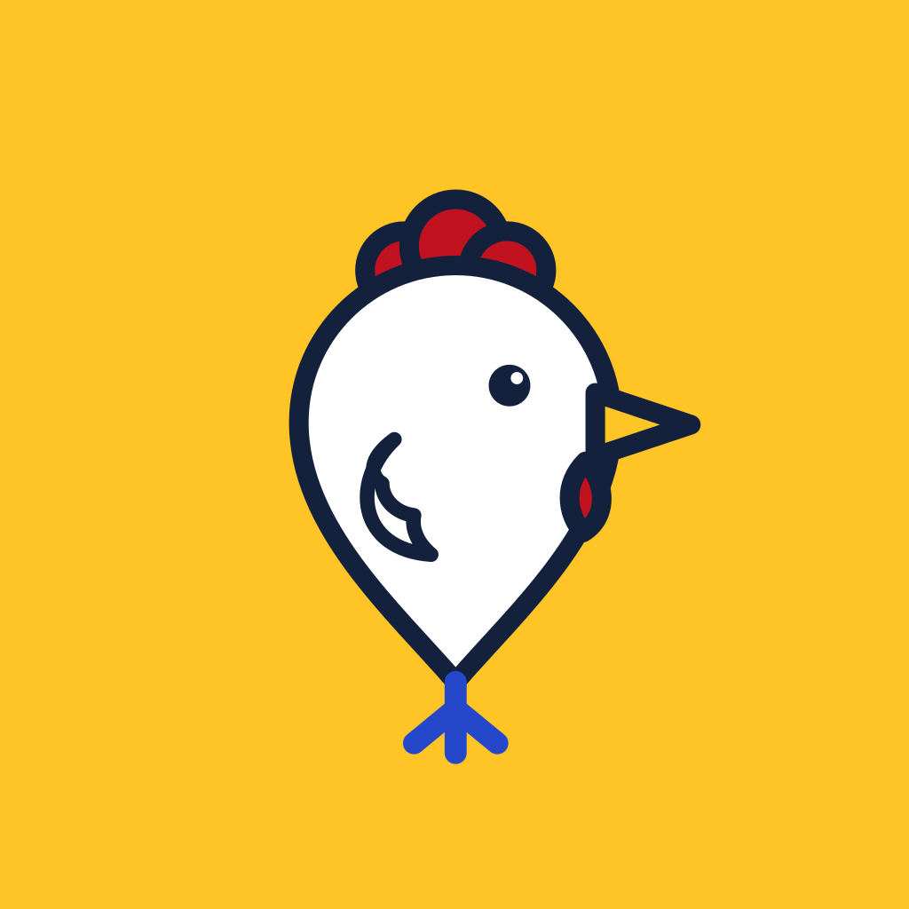
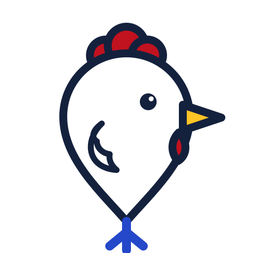

Le Pays du Poulet. Chaque resto est un poulet de Bresse planté sur la carte : crête rouge, plumes blanches, pattes bleues. La patte, c'est la pointe de l'épingle.
Les couleurs
Tirées du poulet de Bresse et du jaune d'œuf. Le jaune porte la marque, le rouge porte l'action, le bleu montre le chemin.
Jaune d'œuf#FFC425 · en-têtes, icône
Crête#C1121F · boutons d'action
Pattes de Bresse#2448C9 · liens, itinéraire
Croustillant#8A4B0F · pilons de note
Encre#14213D · texte
Plume#FFFFFF · fond
Les lettres
Shrikhand pour les noms et les titres, comme une enseigne de rôtisserie peinte à la main. SF Pro, la police d'iOS, pour tout le reste.
Le Poulet Doré Shrikhand, noms de restos et titres
Fast food à Lyon 7e. Les tenders sont croustillants et la sauce maison vaut le détour. SF Pro, texte, boutons, avis
Icône de l'app
Le poulet-épingle sur fond jaune d'œuf. Il reste lisible même en tout petit.

Les écrans
Toute la folie est dans les poulets sur la carte et les mots. Le reste est calme, pour qu'on trouve son resto en trois secondes.

12
4
La Carto'Poulet
CarteUn poulet par resto. Dézoomé, ils rentrent au nid, avec le nombre de restos dedans. Un poulet sautille quand tu viens de publier un avis.
Le Poulet Doré
Fast food à Lyon 7e
4,3
12 avis
Crête-de-Feu
il y a 2 jours
Les tenders sont croustillants, la sauce maison vaut le détour.
Poulette69
il y a 1 semaine
Bon mais un peu d'attente le samedi soir.
Fiche restoL'en-tête jaune d'œuf porte le nom en grand et la note en pilons, avec le chiffre à côté.
9:41●●●
AnnulerLe Poulet Doré.
Alors, ce poulet ?
Croustillant !
1 Sec comme un vieux pneu, 2 Bof, 3 Bon poulet, 4 Croustillant, 5 Cocorico
Les tenders sont croustillants, la sauce maison vaut le détour.
62/1000
Donner mon avisChaque note a son mot, pour que 3 et 4 veuillent dire la même chose pour tout le monde.
9:41●●●
Fermer
Rejoins le poulailler
Ton code à 6 chiffres
4819
Choisis ton pseudo
Crête-de-Feu
Ce pseudo est déjà pris. Essaie Crête-de-Feu-2.
Ton e-mail reste secret. Seul ton pseudo apparaît sur tes avis.
ConnexionE-mail, code reçu par mail, puis pseudo la première fois. L'erreur dit quoi faire.
La Carto'Poulet
📡Pas de connexion. Les poulets déjà affichés restent là. Vérifie ton réseau, on réessaie tout seuls.
Pas un poulet à l'horizonDéplace la carte ou dézoome pour trouver un resto.
Vide et hors ligneJamais d'écran blanc : on dit ce qui se passe et quoi faire.
Frango do Porto
Restaurant portugais à Paris 11e
3,8
31 avis
LeCoqDuQuartier
hier
Le frango piri-piri est parfait, les frites un peu molles.
Mode sombreLe jaune d'œuf reste, le reste passe à l'encre.